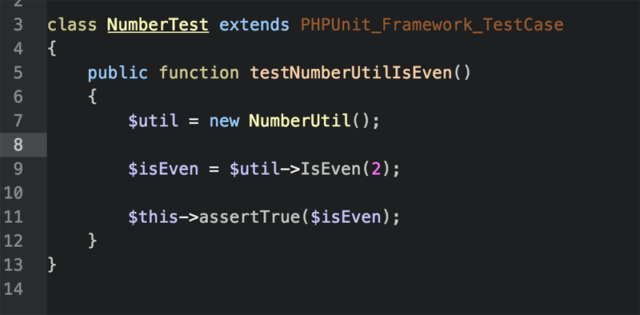
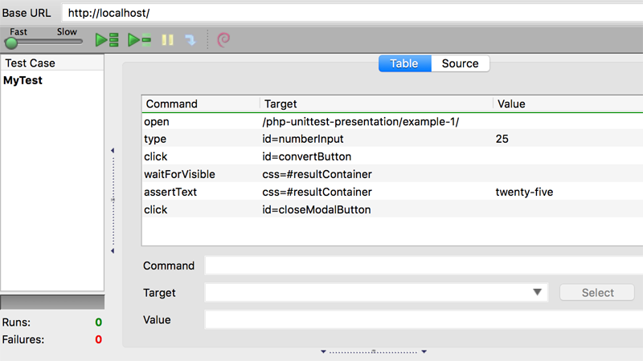

Jason Hinkle - Eventric, Chicago IL
github.com/jasonhinkle
First, a few things...
I don't know everything.
Suggestions welcome!
(You probably already have them installed)
Save this .jar file somewhere convenient.
Or build from source & patch the binary
Install this plugin using FireFox
Install this plugin using FireFox

phpunit path/to/tests

phpunit --coverage-html /output/ /tests/
Contact me @jasonhinkle
Presentation materials are online at github.com/jasonhinkle/php-unittest-presentation